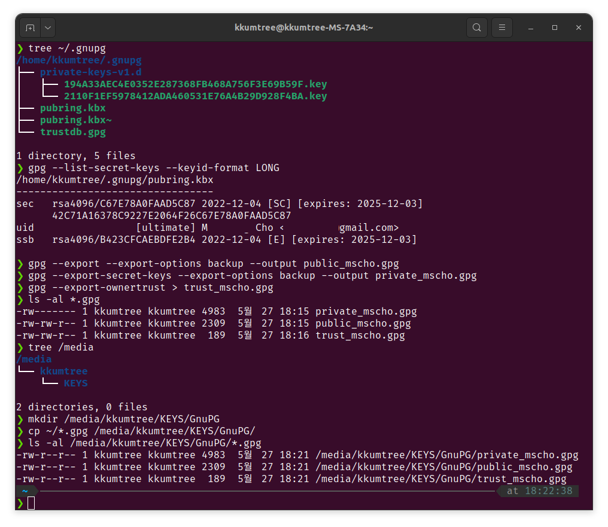

23/05/30 GPG 키 복원방법 및 출처 추가
망가진 PC 메인보드를 교체하고, 서둘러 GPG key를 백업하였습니다.
용량이 그리 큰편은 아니니, 왠만한 USB 메모리에도 충분히 백업이 가능합니다.
(어째서 안했었을꼬…)
출처는 마지막 referenece를 참조해주시기 바랍니다.
1. Backup
# tree로 ~/.gnupg 확인
tree ~/.gnupg
# 현재 사용중인 키 확인
gpg --list-secret-keys --keyid-format LONG
# 키 백업
## public 키 백업
gpg --export --export-options backup --output ~/public_mscho.gpg
## private 키 백업 (암호 입력 필요)
gpg --export-secret-keys --export-options backup --output ~/private_mscho.gpg
## trust(신뢰관게) 백업
gpg --export-ownertrust > trust_mscho.gpg
# 백업한 키 확인
ls -al ~/*.gpg
# 백업한 키를 USB로 복사
## 이미 마운트된 미디어 확인(볼륨이름 KEYS에 보관할 계획)
tree /media
## (옵션)하위 폴더 생성
mkdir /media/KEYS/GnuPG
## 키 복사
cp ~/*.gpg /media/KEYS/GnuPG
## 복사한 키 확인
ls -al /media/kkumtree/KEYS/GnuPG/*.gpg

2. Restore
- 메인보드가 고장나서 패닉이 걸렸고, 일단 키부터 다른 디바이스에 복원해놓기로 했습니다.
# 복원 대상의 PC에 USB를 꽂고, 해당 디렉토리로 위치
cd /media/kkumtree/KEYS/GnuPG
# public 키 복원
gpg --import public_mscho.gpg
# private 키 복원 (암호 입력 필요)
gpg --import private_mscho.gpg
# trust(신뢰관계) 복원
gpg --import-ownertrust trust_mscho.gpg
# 복원된 키 확인
gpg --list-secret-keys --keyid-format LONG